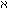

Denn jede Variable stellt eine konstante Form dar, welche alle ihre Werte besitzen, und die als formale Eigenschaft dieser Werte aufgefaßt werden kann.
Wo immer das Wort "Gegenstand" ("Ding", "Sache", etc.) richtig gebraucht wird, wird es in der Begriffsschrift durch den variablen Namen ausgedrückt.
Zum Beispiel in dem Satz "es gibt 2 Gegenstände, welche . . ." durch
"( x, y) . . .".
x, y) . . .".
Wo immer es anders, also als eigentliches Begriffswort gebraucht wird, entstehen unsinnige Scheinsätze.
So kann man z.B. nicht sagen "Es gibt Gegenstände". wie man etwa sagt "Es gibt Bücher". Und ebsenso wenig "Es gibt 0 Gegenstände".
Und es ist unsinnig von der Anzahl aller Gegenstände zu sprechen.
Dasselbe gilt von den Worten "Komplex", "Tatsache", "Funktion", "Zahl", etc.
Sie alle bezeichnen formale Begriffe und werden in der Begriffsschrift durch Variable, nicht durch Funktionen oder Klassen dargestellt. (Wie Frege und Russell glaubten.)
Ausdrücke wie "1 ist eine Zahl", "es gibt nur Eine Null" und alle ähnlichen sind unsinnig.
(Es ist ebenso unsinnig zu sagen "es gibt nur eine 1", als es unsinnig wäre, zu sagen: 2 + 2 ist um 3 Uhr gleich 4.)
x) : aRx . xRb,
(x, y) : aRx . xRy . yRb, . . .
Das allgemeine Glied einer Formenreihe kann man nur durch eine Variable
ausdrücken, denn der Begriff: Glied dieser Formenreihe, ist ein
formaler Begriff. (Dies haben Frege und Russell übersehen; die
Art und Weise wie sie allgemeine Sätze, wie den obigen, ausdrücken wollen,
ist daher falsch; sie enthält einen circulus vitiosus.)
Wir können das allgemeine Glied der Formenreihe bestimmen, indem wir ihr erstes Glied angeben und die allgemeine Form der Operation, welche das folgende Glied aus dem vorhergehenden Satz erzeugt.
(Man kann also z.B. nicht fragen: "Gibt es unanalysierbare Subjekt-Prädikatsätze?")